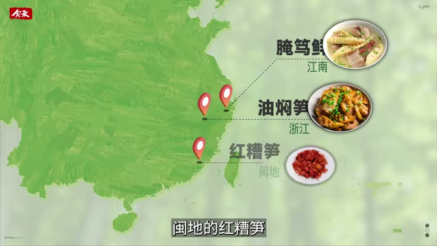
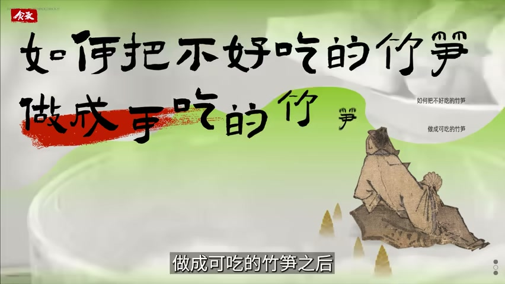

为什么除了中国，很少有国家吃笋呢？
从竹林资源到稳定餐桌：食笋文化是一条需要被接起来的链路
视频给出的答案不是“哪里有竹子哪里就吃笋”，而是品种、产区、去涩、烹饪、保存和采后加工共同决定了竹笋能否跨过食用门槛。
一篇基于视频证据的深度文章
先回答一个反直觉的问题
竹子并不是中国独有的植物，竹林面积也不能直接等同于竹笋消费。视频开头把问题摆成一个反差：全球很多地方都有竹子，但在中国，竹笋被发展成了鲜笋、笋干、酸笋和大量地方菜式；在其他许多竹区，它却没有进入同样稳定的日常餐桌。
读完这篇文章，读者可以带走一个更有解释力的判断框架：先问原料是否适合吃，再问产区和处理方式能否降低门槛，最后问保存与加工能不能把短暂的季节性接到稳定供应上。视频的核心并不是给出一张“哪些国家吃笋”的名单，而是解释一套食用习惯怎样被形成。

这张图支持的是视频对中国地域化食笋方式的展示，不单独证明全球消费统计或完整世界分布。
竹笋不是资源问题，而是食用门槛问题
视频给出的核心解释可以概括为：竹笋能不能成为食物，首先取决于品种，其次取决于产区，之后还要靠处理和烹饪把它变成值得反复消费的味道。竹子数量只是起点，不能替代这些环节。
| 环节 | 视频强调的门槛 | 它解决的问题 |
|---|---|---|
| 品种 | 并非所有竹笋都适合食用，大小、纤维和苦味存在差异 | 先决定“能不能吃” |
| 产区 | 气候、地形、土壤和光照会影响口感与苦涩 | 决定“吃起来是否容易接受” |
| 处理 | 腌渍、发酵、煮熟、晒干或油炒 | 把原料变成可保存、可偏好的味道 |
| 采后加工 | 鲜笋存在短时加工窗口，现代流程承接这一窗口 | 把季节性接到更稳定的供应 |
因此，“为什么很多国家不吃笋”更接近一个转化效率问题，而不是一个植物分布问题。某个地方可能有竹林，却缺少适合食用的品种；也可能有可食用竹笋，却缺少处理苦涩的传统；即使味道能够接受，若采后保存接不上，鲜笋仍然很难变成稳定的日常食材。
从去涩到放大风味
竹笋之所以值得被加工，首先是因为它本身有一组可以被保留下来的吸引力。视频把鲜甜、鲜味、脆爽和一定的蛋白质信息放在一起讲：竹笋不是只有“能填饱”的价值，它还提供了明确的口感和风味回报。正因为原料有回报，处理苦涩和延长保存才值得投入。

这里保留视频自身的表达边界：画面和旁白说明的是视频所引用的风味与营养信息，不扩展为本文之外的营养学共识。
第二步是把“原料门槛”变成“处理路径”。视频提到的传统办法包括腌渍、发酵、煮熟和晒干，它们的共同方向不是让竹笋自然消失，而是主动改变苦涩、含水和保存状态。酸笋、笋干等形式，正是把短暂的鲜笋变成地方饮食中可反复调用的材料。

这张图支持传统预处理的叙事位置，但不单独证明每一种腌制、发酵或晒干方式的具体化学机制。
第三步是把“能吃”继续推向“想吃”。视频将油炒视为中国竹笋烹饪中的一个重要突破：蒸煮可能让部分挥发性香气随水流失，而油炒借助高温和油脂，减少部分腥苦方向，并形成更强的熟香和焦糖化风味方向。这个叙事重点不在于给出一份完整化学报告，而在于说明烹饪会主动放大食材的偏好价值。

视频还把竹笋和肉类的组合解释为两层协同：肉类中的呈味物质与竹笋的鲜味氨基酸叠加，多孔纤维结构则有利于吸收炖煮时释放的脂溶性香气。无论是否采用这套具体机制表述，文章可以确认的叙事关系是：竹笋通过与其他食材配合，进一步嵌入了地方菜肴和家庭烹饪。
| 转化阶段 | 视频中的处理 | 文章中的解释 |
|---|---|---|
| 原料有回报 | 鲜甜、鲜味、脆爽与营养信息 | 让处理成本有理由 |
| 降低门槛 | 腌渍、发酵、煮熟、晒干 | 把苦涩和季节性变成可管理的问题 |
| 放大偏好 | 油炒、与肉类搭配 | 从“能吃”走向“值得反复吃” |
从日本遮光到中国现代加工
视频用日本案例说明，少苦、鲜甜、细嫩并不只有一种实现路径。旁白把温和湿润的海洋性气候、山地环境和遮光栽培联系起来：竹笋尚未破土时，通过覆盖稻草或遮光布减少阳光，追求更白、更嫩、苦味更少的形态。这个案例的意义在于，它把“好吃”重新放回品种、环境和栽培控制的组合里。
回到中国，视频把关键矛盾推进到采后时间。竹笋离土以后仍会继续变化，视频提出约五小时的黄金加工窗口：处理越晚，糖分、甜味和脆爽口感越难保住，传统风干、烟熏和发酵虽然能保存，却难以完全复原鲜笋的状态。

视频后段展示了一条现代加工链：鲜笋从产地采收后尽快送入工厂，先经过过热蒸汽杀青，再用冰水快速冷却，之后进行超低温冷冻。文章能可靠复述的是这条流程以及视频声称的目标，即尽量降低苦涩并保留鲜甜、脆爽；不能仅凭画面把它升级成对企业实力、产品效果或市场表现的外部证明。
这张图支持的是视频展示的工厂化处理流程，不单独证明企业宣传语、产品效果、食品安全或环保绩效。
| 视频展示 | 可以据此写出的内容 | 不能据此推出的内容 |
|---|---|---|
| 竹林与产地环境 | 原料来自特定产区，产地是采后链路的起点 | 完整产量、土壤效果或品牌竞争力 |
| 五小时加工窗口 | 视频强调及时处理对鲜度和口感的重要性 | 对所有品种和所有场景的统一实验结论 |
| 蒸汽杀青、冰水冷却、超低温冷冻 | 视频展示了一条现代加工流程 | 企业实力、产品效果或市场表现 |
把视频变成一套判断顺序
如果要判断一个地方能否形成稳定的食笋链路，可以沿着视频的叙事顺序检查，而不是只看竹林面积。下面这份清单是基于视频的结构化归纳，不是视频之外的产业评估模型。
- 先看品种：是否存在视频所说的可食用潜力，大小、纤维和苦味是否允许进入日常烹饪。
- 再看产区：气候、地形、土壤和光照是否会把苦涩与质地推到难以接受的范围。
- 再看处理：当地是否形成腌渍、发酵、煮熟、晒干或其他能够降低门槛的做法。
- 再看风味：是否有油炒、炖煮或与其他食材搭配的方式，把“能吃”转成“想吃”。
- 最后看采后链路：鲜笋能否在视频强调的短时窗口内完成处理、冷却和保存。
- 把“能吃”“好吃”和“全年可获得”分开判断，它们分别对应不同环节，不能用一个结论替代全部问题。
这套顺序的价值在于，它能解释为什么“竹林很多”仍可能没有形成食笋文化：链路中任何一环断开，原料都可能停留在资源状态，无法稳定转化为地方味觉、保存方法和消费习惯。
证据边界与来源
本文明确区分三类内容。第一类是视频明确表达或展示的内容，例如竹笋消费与资源的反差、品种和产区门槛、传统去涩方式、日本遮光案例，以及现代加工流程。第二类是基于这些材料的合理归纳，即“食笋文化需要整条链路协同”。这句话是文章的分析框架，不是视频逐字提出的理论。
- 平台字幕不可用，正文使用 faster-whisper base 的 CPU int8 转录，并保留了原始 SRT、raw timeline 和最终 repaired timeline。
- 最终时间线仍有部分 ASR 行被保守标记为 uncertain；文章没有把这些行中的不确定专名、精确数值或品牌表述升级成无条件事实。
- 视频后段包含产区和企业案例。本文只复述视频展示的环境与流程，不把它写成企业背书，也不补充视频之外的产品、市场或安全结论。
- 视频中的统计、营养和化学机制均按视频口径使用，不在本文中伪装成外部研究共识。
| 来源项 | 本文使用方式 | 边界 |
|---|---|---|
| 视频元数据 | 来自 metadata.json，用于来源识别 | 不作为内容论证 |
| faster-whisper base 与六张关键帧 | 用于时间定位、段落和画面说明 | ASR 仍保留 uncertain；画面不替代外部验证 |
| 视频后段品牌案例 | 用于说明视频展示的产地与加工流程 | 不推出企业实力、产品效果或市场表现 |
来源导航：赛博食录，《为什么除了中国，很少有国家吃笋呢？》，Bilibili，2025-04-16，https://www.bilibili.com/video/BV1tHdoYnEGm。文中时间与画面引用均指向资产内证据记录。